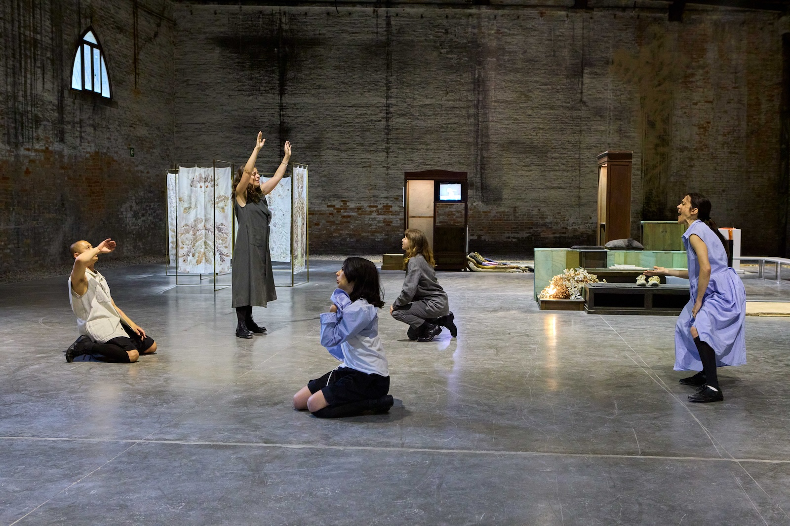
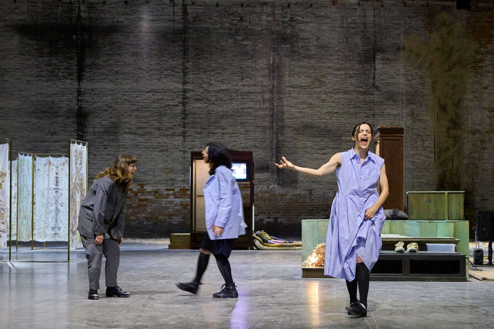
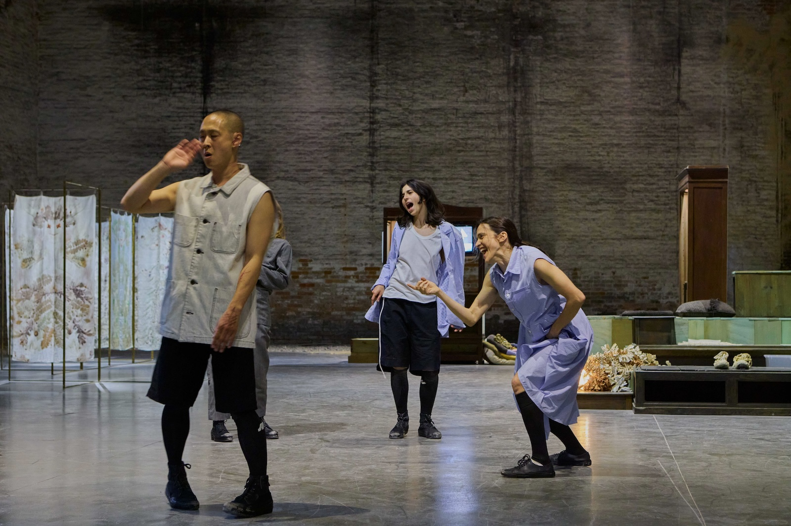
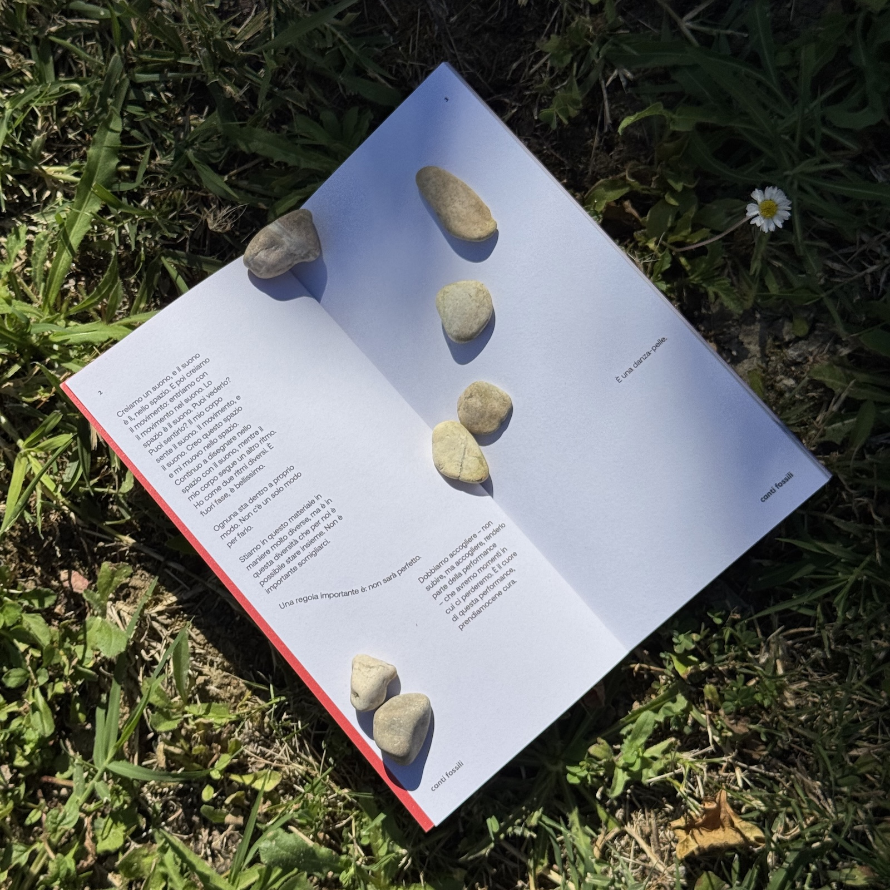
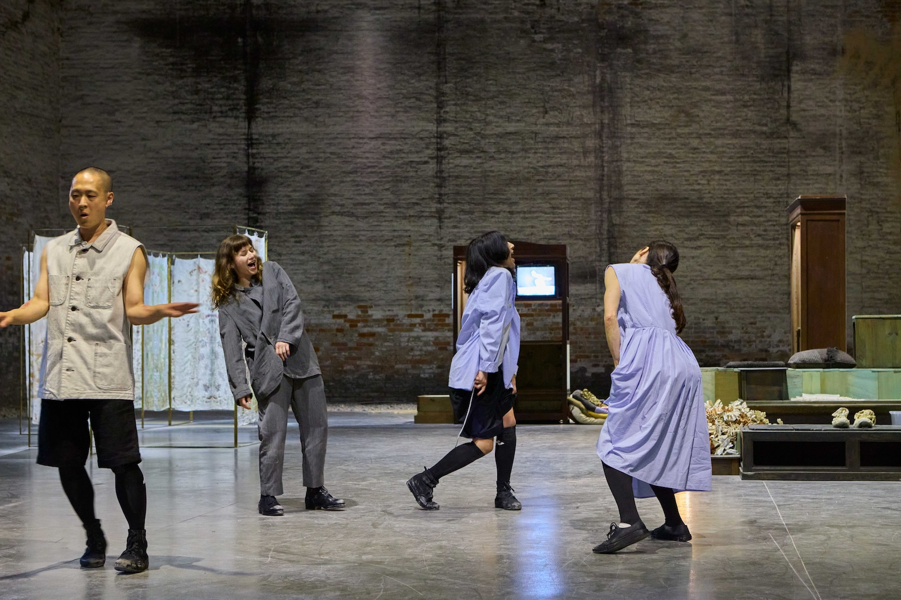

Canti fossili


Canti fossili has been developed in dialogue with the exhibition Con te con tutto by Chiara Camoni, curated by Cecilia Canziani for the Italian Pavilion at the Biennale Arte 2026, promoted by the Directorate-General for Contemporary Creativity of the Italian Ministry of Culture. The project is part of the Dialoghi section, conceived and designed by Fiammetta Griccioli and Lucia Aspesi, with the aim of fostering multiple interpretations of the works on display through the commissioning of new interventions, accompanied by a constellation of works and documents integrated into the very body of the installation.
Annamaria Ajmone accepts the invitation to inhabit the second bay of the Italian Pavilion – Biennale Arte 2026, conceived as a world under construction, composed of natural elements, artifacts and recycled materials, open toward a constantly evolving horizon.
Canti fossili is a performance dedicated to the relationship between dance and voice, understood as living and relational matter: a sensitive interface between bodies and environment, capable of generating affective and tactile configurations, of becoming connective tissue and of transforming space together with movement. The dancers build a dialogue between organic and inorganic matter, between the living and the fossil, within an accumulation of sedimented memories. The structure of the creation is modular. It includes an initial action for the opening of the Pavilion with five dancers, followed by subsequent activations over the course of the exhibition's months, during which the ensemble fragments and recomposes itself.
Alongside this intermittent presence is a booklet that gathers the dancers' voices: fragments that echo one another as in a chorus. Born from the need to give voice, in a deferred form, to the performance Canti fossili, the booklet will be present and available for consultation within the exhibition. From this perspective, the choreographic practice and the form of the printed text are not exhausted within the event, but extend into its multiple material and immaterial manifestations, like an open field of fragmentary and temporary presences.
Canti fossili is part of a research project articulated in three moments that will conclude in 2027 with a show supported by FOG Triennale Milano Teatro; Centro Nazionale di Produzione della Danza Virgilio Sieni; Snaporazverein and Fondazione Armunia/Capo Trave Kilowatt Centro di Residenza della Toscana; with the support of Fondazione Piemonte dal Vivo within the framework of the Lavanderia a Vapore project.
Thanks to Mebiam S.a.s. (Matteo Binci, Marco Amore), Beatrice Biondi, Attila Faravelli, Lindu Gozzo, Annamaria Pieretti, Matteo Barp, Virginia Rubini, Federica Jannuzzi, Natália Trejbalová, Elena Vastano, Stefano Tomassini, Alessandra Simeoni. BASE MILANO, ASSAB ONE, DID STUDIO, MOTELSALIERI.
Con te con tutto
Italian Pavilion - Biennale Arte 2026
Commissioner: Angelo Piero Cappello
Curator: Cecilia Canziani
Artist: Chiara Camoni
Event realized for the Italian Pavilion at the Biennale Arte 2026,
promoted by the Directorate-General for Contemporary Creativity
of the Italian Ministry of Culture
Choreography
Annamaria Ajmone
In collaboration with
Veza Fernandez, Erwan Ha Kyoon Larcher, Emma Saba, Toni Steffens
Dramaturgical collaboration
Stella Succi
Fashion
Fabio Quaranta
Production
Valentina Bertolino
Organization
Francesca d'Apolito
Administration
Monica Maggio
Book colophon
With Annamaria Ajmone, Veza Fernandez, Erwan Ha Kyoon Larcher, Emma Saba, Toni Steffens, Stella Succi
Dramaturgy
Stella Succi
Graphic design
Giulia Polenta
Translation
Allison Grimaldi Donahue

